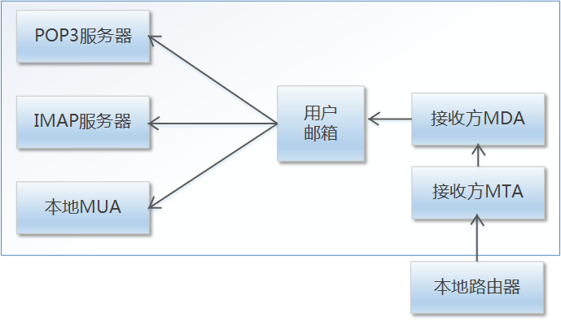

数字证书认证服务介绍
可以量身定制的平台
服务介绍
数字证书在网络上类似于人在现实社会中持有的身份证等证件，用来在网络上证明数字证书持有者的身份。数字证书持有者可以是现实社会中的自然人、法人，也可以是网络设备。数字证书可以简单理解为“网络身份证”，用来在网络上证明自己的身份。数字证书是由国家工信部和国家密码管理局许可的第三方电子认证机构（简称“CA”）颁发。数字证书在电子政务系统中登录过程和签名过程都需经CA中心认证。
为避免重复建设、资源浪费、一户多证、互不联通，提高证书使用效率，加强数字认证体系的统筹规划和管理，成都市政府统一采购CA认证服务，为成都市政府职能部门提供：RA账户管理服务、客户端身份认证服务、可信网站服务、证据保全服务、时间戳服务以及电子签章服务。保障政务系统的可靠性、安全性、完整性以及抗抵赖性。
四川省数字证书认证管理中心有限公司（简称“四川CA”）成立于2007年11月，是经四川省政府授权成立的我省第三方数字证书认证机构，是四川省统一数字认证体系的重要组成部分，是四川省信息安全的重要基础设施，是信息安全产业链重要环节，是四川省信息安全产业重点企业，是四川省内唯一获得国家工业和信息化部颁发的《电子认证服务许可证》和国家密码管理局颁发的《电子认证服务使用密码许可证》的合法电子认证服务机构。
系统架构图
服务清单
RA账户服务是为各政府职能部门提供基于国家根CA下的证书模块配置、证书生命周期管理、CRL黑名单列表管理、证书查询验证、证书开发集成接口等服务。
RA账户管理服务
RA账户服务是为各政府职能部门 提供基于国家相关服务
安全电子签章服务
应用数字签名技术开发，实现电子签章和手写签名的完美应用。
电子证据保全服务
通过符合《电子签名法》的电子签名技术，可以有效的解决政务诉讼问题
可信网站服务
利用鉴证与技术双重手段，一方面将网站所有者和网站一一对应
客户端身份证认证服务
同时为用户办理、更新、吊销数字证书提供了多种便捷的服务模式

时间戳服务
有效地解决资金结算、信息审核等信息的时效性问题